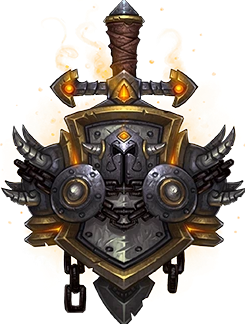
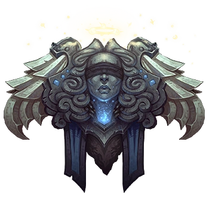
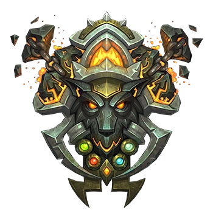

Les Classes de Gardenia
À Gardenia, les différences entre les peuples ne limitent pas les vocations. Chaque race peut suivre la voie du Guerrier, du Chasseur, du Mage ou de l'Acolyte.

GuerrierLe Guerrier est le pilier des armées de Gardenia. Qu'il soit chevalier humain, défenseur nain, combattant orc ou champion troll, il se distingue par sa force et son courage.
Spécialités
- Combat rapproché
- Maîtrise des armes
- Protection des alliés
- Commandement militaire
 Chasseur
Chasseur
Les chasseurs parcourent les terres sauvages de Gardenia. Ils excellent dans le pistage, la survie et l'utilisation des armes à distance.
Spécialités
- Tir à distance
- Pistage
- Survie
- Exploration
 Mage
Mage
Les Mages consacrent leur vie à l'étude des énergies mystiques. Grâce à leurs connaissances, ils manipulent les forces magiques pour protéger, attaquer ou assister leurs alliés.
Spécialités
- Magie offensive
- Magie défensive
- Recherche magique
- Connaissances arcaniques

Acolyte
Les Acolytes sont des guides spirituels et des soigneurs. Ils servent les croyances de leur peuple et consacrent leur existence à aider les autres.
Spécialités
- Soins
- Bénédictions
- Rituels
- Accompagnement spirituel
Disponibilité des Classes
| Classe | Humain | Nain | Orc | Troll |
|---|---|---|---|---|
| Guerrier | ✔ | ✔ | ✔ | ✔ |
| Chasseur | ✔ | ✔ | ✔ | ✔ |
| Mage | ✔ | ✔ | ✔ | ✔ |
| Acolyte | ✔ | ✔ | ✔ | ✔ |